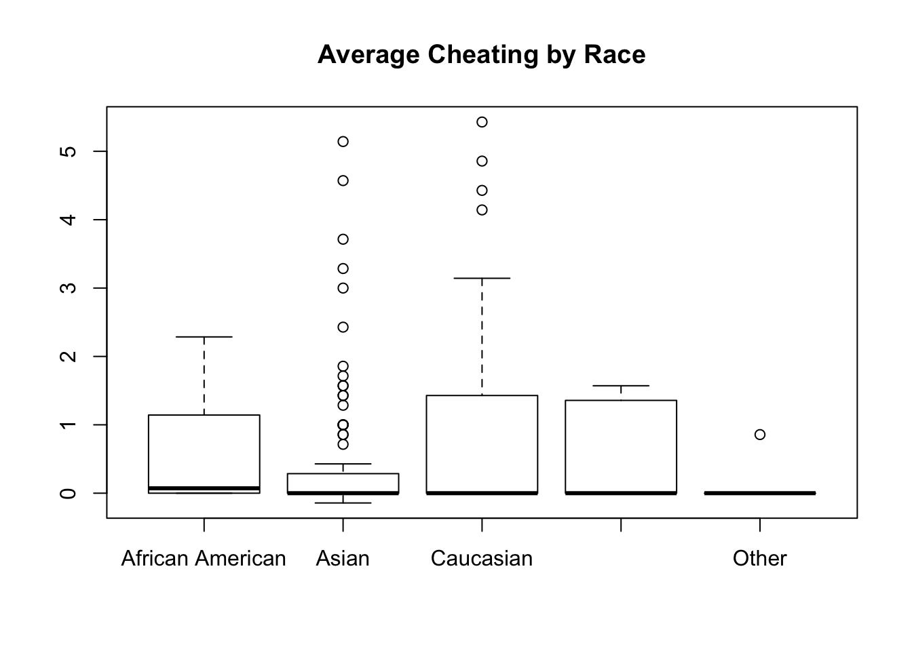

The data that will be used for this analysis has been collected by my team members and I as part of our BDS 501 project. We conducted our experiment at Penn on both undergraduate and graduate Penn students. In total, we had a total of 205 participants, which can be further broken down into 51 teams comprising of 51 leaders and 154 followers. Since we are only interested in follower behavior, we have a total of 150 observations (accounting for a few cases where participants had to be excluded due to the leader not following instructions). The relevant data which has been broadly organized by types and their respective categories can be seen in the table below.
| Data | Type |
|---|---|
| Participant ID | Categorical |
| Pre-survey Results | Ordinal/Categorical |
| Treatment Group | Categorical |
| Dice Results | Ratio |
| Individual reported results | Ratio |
| Team reported results | Ratio |
| Post-survey results | Ordinal/Categorical |
| Demographics | Categorical |
An additional breakdown of participants’ race by condition can be seen below. In the Control condition, the leader reports the team score accurately (i.e. add 0 to the final team score); in the Low Cheat condition, the leader overreports the team score slightly (i.e. add 1-4 to the final team score); and in the High Cheat condition, the leader overreports the team score by a lot (i.e. add 5-9 to the final team score).
## <!-- html table generated in R 3.5.1 by xtable 1.8-2 package -->
## <!-- Mon Dec 17 15:46:56 2018 -->
## <table border=1>
## <tr> <th> </th> <th> Control <br/> N=51 </th> <th> High Cheat <br/> N=51 </th> <th> Low Cheat <br/> N=48 </th> <th> N </th> </tr>
## <tr> <td> race: </td> <td align="center"> </td> <td align="center"> </td> <td align="center"> </td> <td align="center"> 150 </td> </tr>
## <tr> <td> African American </td> <td align="center"> 6 (11.8%) </td> <td align="center"> 1 (1.96%) </td> <td align="center"> 1 (2.08%) </td> <td align="center"> </td> </tr>
## <tr> <td> Asian </td> <td align="center"> 28 (54.9%) </td> <td align="center"> 32 (62.7%) </td> <td align="center"> 32 (66.7%) </td> <td align="center"> </td> </tr>
## <tr> <td> Caucasian </td> <td align="center"> 9 (17.6%) </td> <td align="center"> 14 (27.5%) </td> <td align="center"> 8 (16.7%) </td> <td align="center"> </td> </tr>
## <tr> <td> Hispanic/Latinx </td> <td align="center"> 4 (7.84%) </td> <td align="center"> 2 (3.92%) </td> <td align="center"> 6 (12.5%) </td> <td align="center"> </td> </tr>
## <tr> <td> Other </td> <td align="center"> 4 (7.84%) </td> <td align="center"> 2 (3.92%) </td> <td align="center"> 1 (2.08%) </td> <td align="center"> </td> </tr>
## <tr> <td> age </td> <td align="center"> 22.0 (4.14) </td> <td align="center"> 21.6 (3.02) </td> <td align="center"> 21.7 (2.83) </td> <td align="center"> 149 </td> </tr>
## </table>Included below is also some summary statistics on the average amount cheated by followers, broken down by condition.
Variable: FinalData$avgcheat by Condition
| Control | High Cheat | Low Cheat | |
|---|---|---|---|
| Mean | 0.32 | 0.78 | 0.57 |
| Std.Dev | 0.89 | 1.40 | 1.10 |
| Min | 0.00 | 0.00 | -0.14 |
| Median | 0.00 | 0.00 | 0.00 |
| Max | 4.86 | 5.43 | 5.14 |
| IQR | 0.00 | 1.36 | 0.86 |
Finally, a boxplot showing the distribution of average cheating across the different race groups for all treatments in our study is below. 
For the purposes of testing my hypotheses, I will be using an ANOVA to see if there are any significant differences in cheating behavior among followers of differenct races across all conditions. I will be specifically looking to see if significant differences in the average amount cheated for different races exist. I will also run Tukey’s HSD to provide a breakdown of which specific groups’s means compared with each other are different (if there are any). Using an ANOVA is an appropriate method since I will be testing for differences between two or more means, or in my context, racial groups. Running a Tukey’s HSD is also an appropriate, though potentially unnecessary post-hoc test since it usually accompanies an ANOVA test.